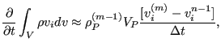

Next: Convection term Up: Conservation of momentum (compressible Previous: Conservation of momentum (compressible Contents
|  | (540) |
where
 |
(541) |
 is the static pressure,
is the static pressure,  is the static temperature and
is the static temperature and  is the gas
constant. The derivative was replaced by a backward Euler scheme. Notice that quantities such as pressure, temperature and density are taken from
iteration
is the gas
constant. The derivative was replaced by a backward Euler scheme. Notice that quantities such as pressure, temperature and density are taken from
iteration  . Therefore, the scheme will not be unconditionally stable
(although this is a property of the backward Euler scheme).
. Therefore, the scheme will not be unconditionally stable
(although this is a property of the backward Euler scheme).